Fem riktningar, den senaste (E, Huset) överst. Samma innehåll i varje: startsidans första vy, portalen med VD-assistenten öppen och startsidan på mobil. Välj en, eller säg vad du vill blanda.
Kontoret är ett hus som växer. Kunden flyttar in på en våning, bygger en till när teamet växer, och får plats med så många kollegor som behövs. Varje rum är en kollega. Rummen inreds efter smak, och varje möbel är en funktion: väggkalendern ger en veckorutin, arkivskåpet läser era underlag, telefonen kopplar rummet till er egen Claude eller ChatGPT, diplomet slår på de kontrollerade svenska reglerna. Tolv rumstyper och åtta möbler finns redan, alla i samma stil.
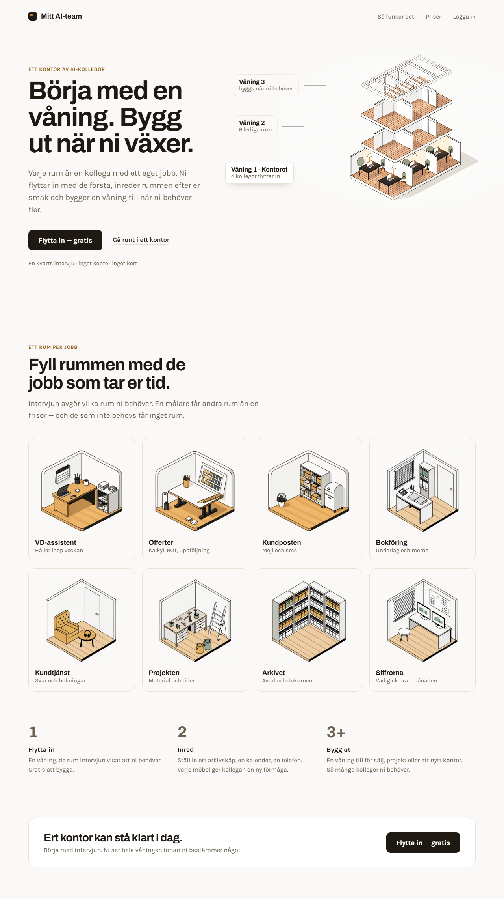
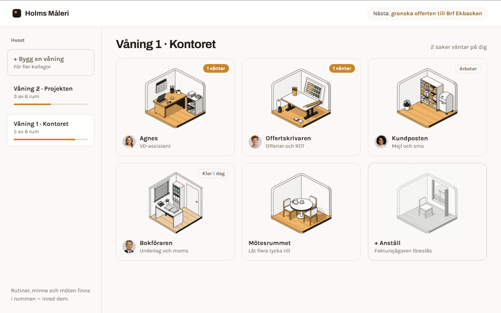
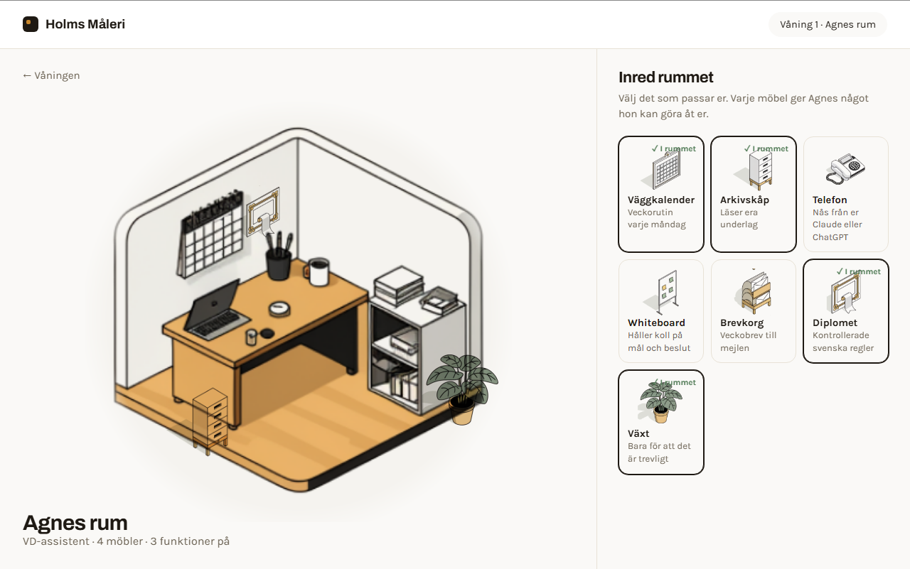
A:s lugn, men med kontoret som spel. Startsidan visar en tom våning där ett rum är tänt: "Ert kontor står tomt. Fyll det." Tre våningar blir kapitel (Första anställningen, Mötesrummet, Pentryt), samma nivåer som portalen redan har. I portalen är laget rum: anställda med ansikte, låsta rum i grått, och en framstegsrad som visar våningen. Illustrationerna är gjorda i ElevenLabs i en och samma stil, så att allt hänger ihop.
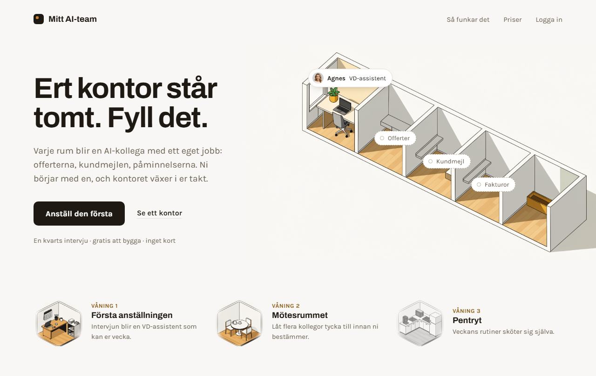
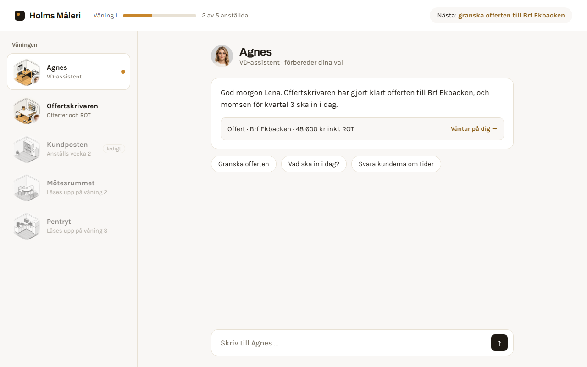
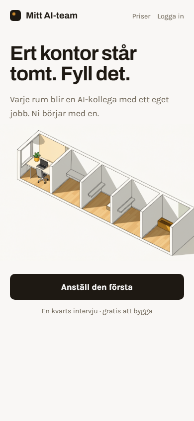
Närmast det ni har i dag, men avskalat. Vänsterställt, mycket luft, tre steg längst ner. Portalen blir laget till vänster och samtalet i mitten. Säkrast och snabbast att bygga.
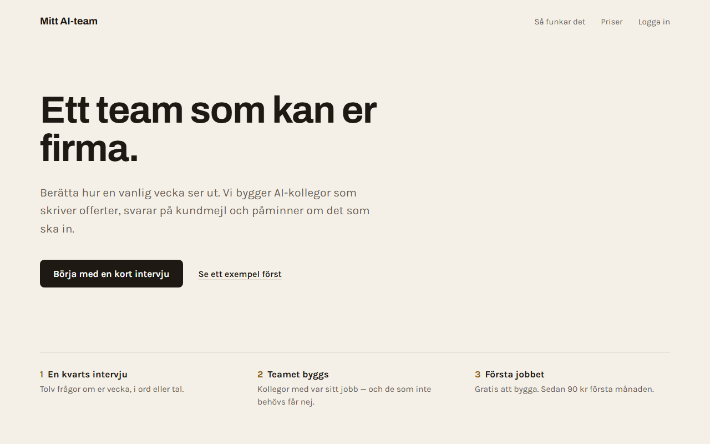
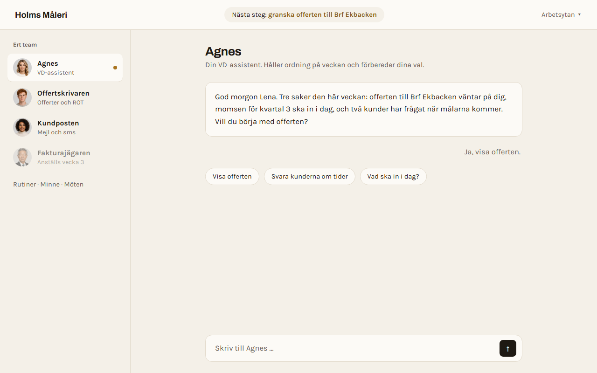
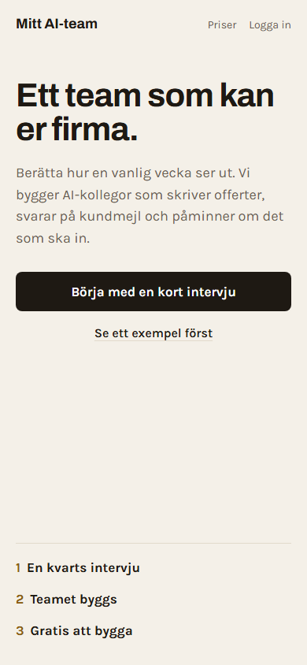
Varmare och mer eget. En tecknad kontorsvåning bär sidan (genererad med ElevenLabs), och portalen visar teamet som rum med ett tydligt "1 väntar". Behåller känslan av anställda utan intervjufilmen.
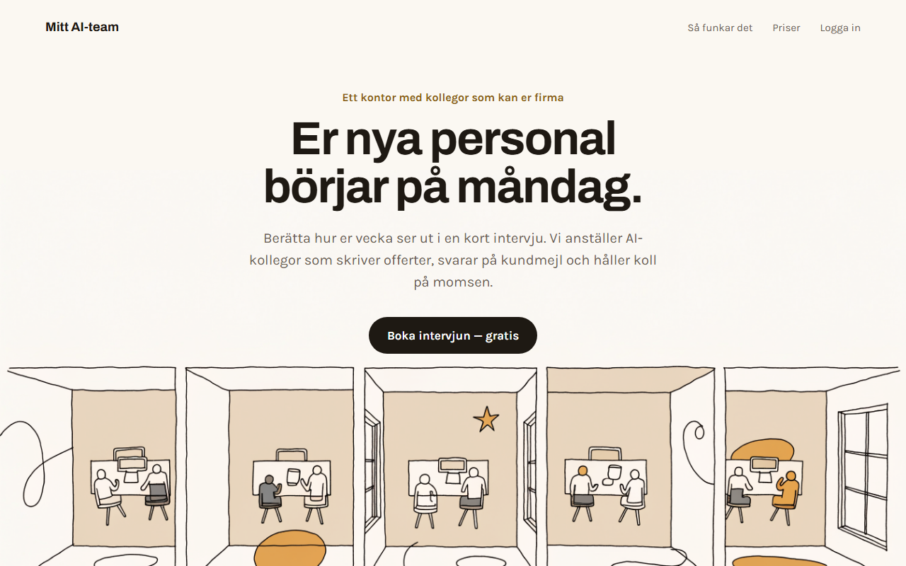
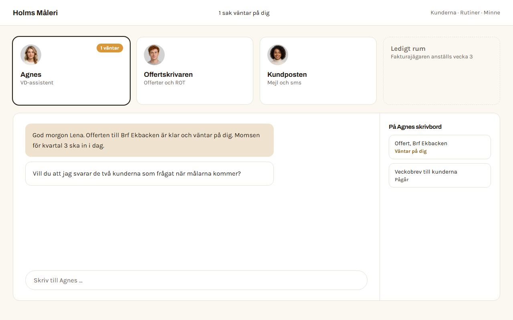
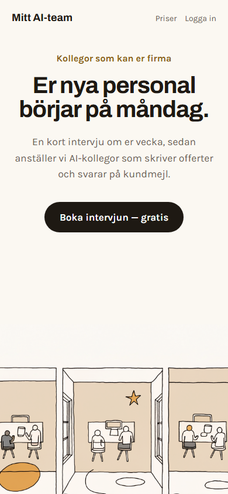
Personligast. Kandidaten skriver ett brev till kunden, och portalen blir en tråd av korta brev med ett val under varje. Minst gränssnitt, men längst ifrån det som finns i dag.
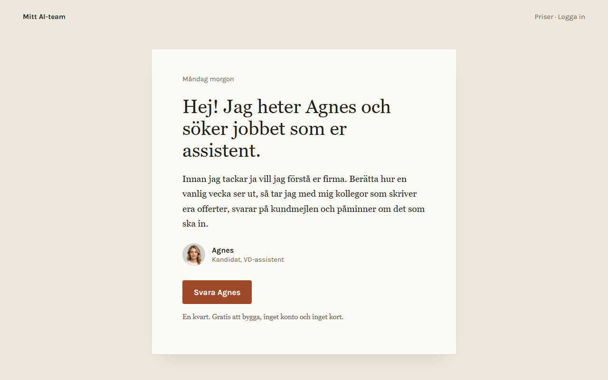
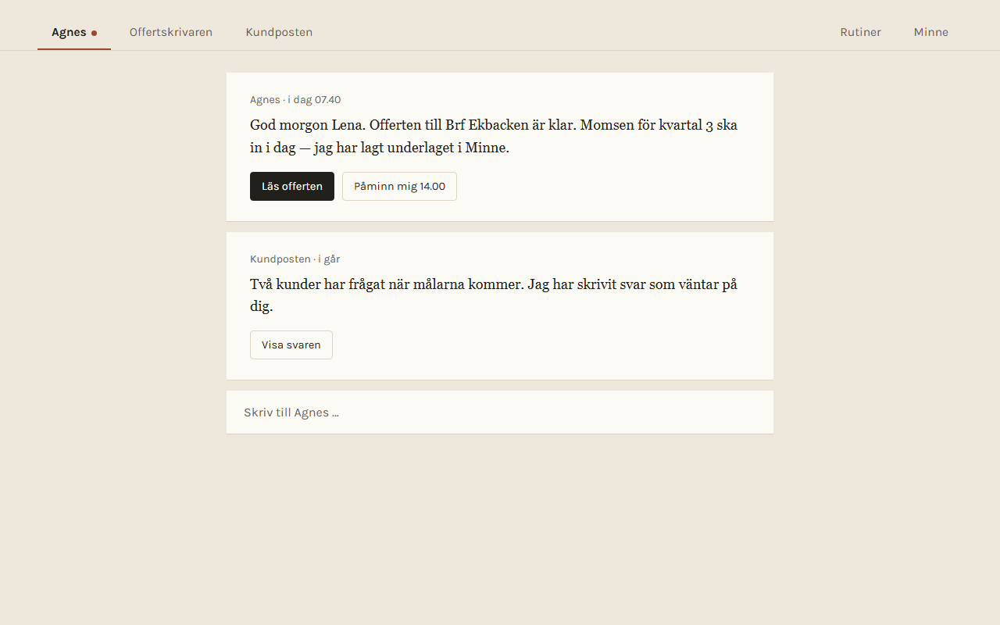
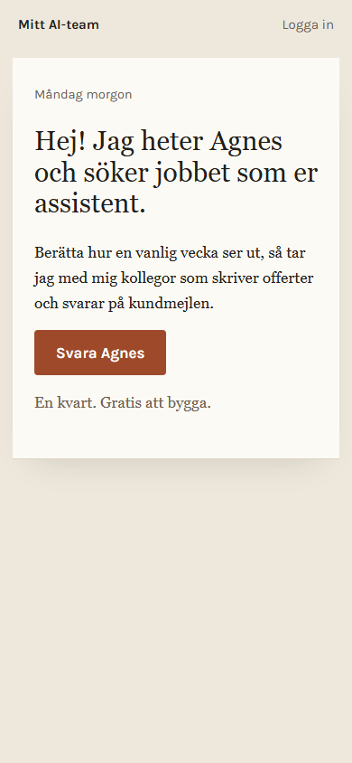
Skisserna ligger i design/omg2/. Inget på sajten är ändrat än. Alla tio ElevenLabs-bilder (B, D och E) kostade tillsammans cirka 8 cent.